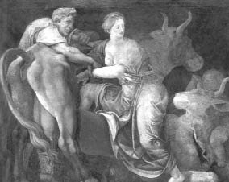

Sanatçı Daydalos'un yaptığı tahtadan inek
Atinalı heykeltıraş ve mimar Daydalos (Daidalos), on parmağında on hüner olan çok yönlü bir sanatçıydı. Bu özelliğiyle de dillere destandı zaten... Antikçağın filozoflarından Platon bile, bir heykeltıraş olarak onun işleyip yonttuğu heykellerin bir süre sonra canlandıklarından, ellenip ayaklandıklarından söz ediyordu! Yunanistan'da mimarlığın babası sayıldığı gibi mekanik araçlar ve gereçler üretmede de onun eşi benzeri yoktu! Bütün bu olağanüstü yetenekleri, el sanatlarının tanrısı demirci topal Hefaystos bağışlamıştı ona...
Daydalos'un kendisi de bütün bunların bilincindeydi... Ne var ki çok kıskanç biriydi. Bu yüzden kendisinde bulunmayan bir yeteneği bir başkasında gördü mü, kendini tutamaz, çılgınca eylemlere giriştiği olurdu... Örneğin kendi işliğine çırak olarak alıp zaman içinde kalfası olan yeğeni Talos'la aralarında geçen o ürkünç olay, hiç unutulmadı... Yetenekli kalfası Talos, balığın ağız yapısını ve omurgasını oluşturan kılçıkları incelemiş ve bu gözlemlerine dayanarak bir testere yapmıştı. Bunu gören ustası Daydalos'un kıskançlığı öylesine şahlandı ki, bir gün bir yolunu bulup onu tanrıça Atena'nın tapınağının çatısından aşağı itiverdi! Ne var ki Atena da bu yetenekli gence acıyıp tam yere çakılacakken, hemen bir kekliğe dönüştürüverdi! Talos da kanatlanıp uçaraktan canını kurtardı. İşte o yüzden keklikler, ta o zamandan beri hep alçaktan uçarlardı!..
Ama Daydalos uzun süre saklayamadı bu suçunu. Atina'daki halk mahkemesi Aeropagos da, inceden inceye araştırıp bulduğu delillere dayanarak, onu ülkesinden sürgün edilme cezasına çarptırdı... O da kendine ve sanatına hayranlık duyan Girit kralı Minos'un ülkesine sığındı... Daydalos bu yeni ülkede de boş durmadı; aynı coşkuyla mimarlığını, heykelciliğini, metal işlemeciliğini sürdürmeye başladı. Gene yonttuğu mermer heykeller, Atina'da yonttukları gibi olağanüstü güzeldiler. Bunlardan bazılarının ellenip ayaklanıp geceleri sokaklarda dolaştıklarını görenler bile vardı! Bu yüzden meydanlara, yollara dikilen heykellerini bulundukları yerden kaçıp gitmesinler diye, çok sağlam halat ve zincirlerle bağlamaya başladılar!.. Gene Daydalos, tanrılar gibi güçlü Herakles'in de heykelini yonttu... Yetkililer bu görkemli heykeli kentin ta göbeğine diktiler... Şarabı biraz fazla kaçırdığı bir gece Daydolos, evine giderken yolu üstündeki Herakles'in heykeline uzun uzun baktı. Ve Herakles onun o sarhoş haline bakıp gülümseyince, Daydalos da hemen heykele saldırdı; onunla bir süre boğuştu. Sonra da Herakles'in ayakları dibinde uyuyakaldı...
Girit kralı Minos; gerçekten de Daydalos'un olağanüstü sanatçılığına büyük bir hayranlık duyuyor ve onu kendi ailesinden biriymiş gibi yürekten ağırlıyordu sarayında... Zaten Daydalos da unvanlı bir devlet sanatçısı olarak, yarattığı birbirinden güzel heykel ve kurduğu görkemli yapılarla, halkın da hayranlığını kazandı. Kısa sürede komşu ülkelerde de, adıyla sanıyla ününü pekiştirdi. Bu arada Daydalos; bazı çetrefil sorunlar karşısında önlem alma, çözüm bulma yeteneklerini de yeri geldiğinde kullanıyordu... Bu yönünü saray çevreleri de çok iyi biliyordu. Ne var ki bu tanrısal yetenekleri yüzünden, kendi yazgısının ağlarını da kendi elleriyle örüyor gibiydi. Çünkü sanatçımız ister istemez, bu yeteneklerini bazen kral Minos'un çıkarlarına ters düşecek şekilde kullanmak zorunda kalıyordu. Bu yüzden de kralın gitgide şahlanan öfkesini çekiyordu üstüne...
Örneğin kral Minos ve Daydalos'la ilgili olarak Minotauros adlı bir boğa olayı vardı ki hiçbir çağda unutulmadı... Bu olay Minos'un kral olmazdan önce, taht kavgası yüzünden iki kardeşiyle kanlı-bıçaklı olduğu günlere dayanıyordu... Bu kavgalardan üstün çıkıp kral olabilmek için Minos gidip denizler tanrısı Poseydon'dan yardım istemişti. Ayrıca görenlerin hayranlıktan dillerinin tutulacağı bir ak boğa göndermesini de dilemişti tanrıdan. Çünkü kral olursa, bu boğayı onun onuruna, halkın önünde kurban edecekti! Tanrı Poseydon, Minos'un dileklerini gerçekten de kabul etti ve ona deniz köpüklerinden yarattığı ak mı ak, besili bir boğa gönderdi. Bir süre sonra Minos kral oldu... O tanrısal ak boğayı tanrı Poseydon adına kurban etmesi gerekirken, kalkıp onu damızlık olarak kendi yoz hayvan sürülerinin arasına karıştırıverdi! Bu nankörlüğe çok içerleyen tanrı Poseydon da, kral Minos'tan öcünü almak üzere tuzak üstüne tuzak kurmaya başladı. İlk iş olarak kralın karısı Pasifae'nin (Pasiphae) gönlünde, bu ak boğaya karşı bir çeşit aşk tutkusu ve gemlenemez cinsel duygular uyandırdı! İşte bu gemlenemez duyguların etkisiyle kraliçe Pasifae, ak boğayla çiftleşebilmek için sanatçı Daydalos'tan yardım istedi. Daydalos da, olayın aralarında gizli kalması sözünü aldıktan sonra, canlıymış gibi duran güzel mi güzel, çekici bir inek heykeli yaptı tahtadan. Ve bu tahta heykeli bir inek derisiyle kapladı. Pasifae de bu heykelin içine girip uygun şekilde yerleşti. Sanatının büyük ustası Daydalos'un tahtadan inek heykeli, öylesine canlı ve çekiciydi ki, ak boğa gelip bu tuzaklı heykelle çiftleşti!
İşte bu çiftleşmenin sonunda, tanrı Poseydon'un çizdiği yazgı uyarınca, bütün Girit'i ve giderek bütün Yunanistan'ı kasıp kavuracak bir canavar doğurdu kraliçe Pasifae! Ve bu canavara; "Minos'un boğası" anlamında, "Minotauros" adını verdiler.